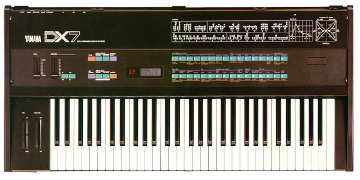

Yamaha Corporation va ser fundada l'any 1887 al Japó per Torakusu Yamaha.
Es va fer coneguda a nivel global per ser el major fabricant d'instruments musicals de quasi tots els tipus.
Al 1981 surt al mercat el que considerem el primer sintetitzador digital de la història: el DX7.
Elton John, Depeche Mode, New Order i Kate Bush son a soles uns xicotets exemples de tots els músics que van fer us d'aquest instrument (la llista es prou larga).
